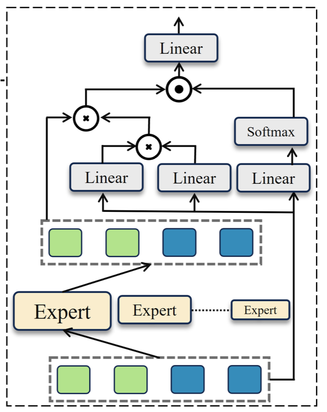
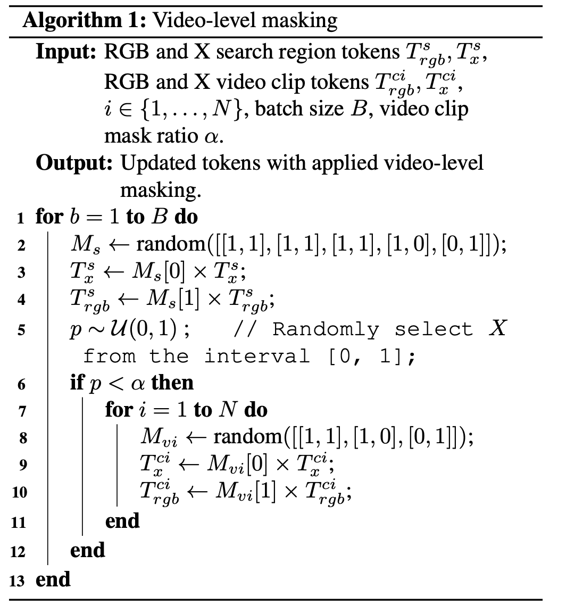

<div class="middle center"> <div style="width: 100%"> # What You Have is What You Track: Adaptive and Robust Multimodal Tracking <hr></hr> [王倓](https://github.com/Mandorian) 2026.01.09 </div> </div> <!--v--> ## 动机和创新点 现实中多模态跟踪中传感器不同步和临时失效会导致模态在时间上不完整，而现有多模态跟踪方法大多隐含假设各模态始终完整可用，结构固定、计算复杂度恒定，因此在模态缺失场景下性能显著退化，且这一问题此前缺乏系统研究。 \ 论文的创新点主要体现在提出一个统一且自适应的多模态跟踪框架**FlexTrack**，引入具有不同容量的**异构混合专家融合机制**(HMoE)，通过视频级别的路由方式，根据模态缺失比例和场景复杂度动态激活合适的专家模型以调节推理复杂度，同时设计了一种多模态视频级掩码训练策略，在保证空间完整性的前提下利用时间连续性来增强模型对模态缺失的鲁棒性。 <img src='./lec7/motivation.png' width=45% style='display: block; margin: 0 auto;'> <!--v--> ## 缺失的模态 设置缺失模态在于真实多模态跟踪系统中传感器不同步、曝光时间差异以及通信或硬件故障会导致某些模态在时间上间歇性不可用，而现有公开数据集和多数方法默认各模态始终成对且完整，这种理想化设定无法反映真实应用场景，从而掩盖了模型在模态不完整条件下的性能退化问题。通过显式构造模态缺失情形，一方面系统性地分析现有多模态跟踪器在时序模态不完整条件下的鲁棒性不足，另一方面推动模型学习在信息不充分时如何依赖时间连续性和剩余模态进行补偿，从而促使跟踪器具备面向真实世界部署所必需的适应性与稳健性。 <!--s--> ## 模型架构 输入由RGB模态和辅助模态构成，以视频片段和搜索区域的形式送入共享的视频编码器进行特征提取，编码后得到来自不同时间步和不同模态的toke 表示，这些token被拼接为视频级表示并送入后续的多模态融合模块完成跨模态、跨时间的信息整合，最终通过标准的分类头与回归头输出目标中心位置以及尺度信息。 <img src='./lec7/arch.png' width=80% style='display: block; margin: 0 auto;'> <!--v--> ## 核心模块 在主要模块设计上，论文包含两个核心组成部分： + 一是异构混合专家融合模块，该模块以视频级token为路由单位，通过门控函数从多个具有不同隐藏维度规模的专家中选择Top-K专家进行加权融合。 + 二是多模态视频级掩码训练策略，该策略仅在训练阶段启用，通过在搜索区域和视频片段层面施加结构化的模态掩码，保证任意时间步至少存在可用模态。 <!--v--> ## 异构混合专家融合 将所有来自RGB与辅助模态的搜索区域token与视频片段token拼接为视频级表示$T_v$，整个视频片段作为路由单位送入门控函数$G(\cdot)$，得到对各专家的匹配权重，仅激活Top-K个专家（论文中设定K=2），其门控权重定义为$g_n=\mathrm{Softmax}(G(T_v))_n$，融合输出为$T_y^{(1)}=\sum^M_n g_n E_n(T_v)$，其中每个专家$E_n(\cdot)$由线性层构成但具有不同隐藏维度规模以体现异构性。\ 对$T_v$施加线性注意力变换得到$T_y^{(2)}=T_v W_1 (T_v W_2)^{\top}$，将其与专家输出结合为$T_y^{(3)}=T_y^{(1)} (T_y^{(2)})^{\top}$再通过基于$T_v$的softmax加权$T_y^{(4)}=\mathrm{Softmax}(T_v W_3) T_y^{(3)}$，最终经线性映射$T_y^{(5)}=T_y^{(4)} W_4$生成融合特征。  <!--v--> ## 多模态视频级掩码 <div class="mul-cols"> <div class="col"> 模型首先对搜索区域token施加掩码，从预定义的模态组合中随机采样一个掩码模式，对RGB或辅助模态的搜索区域特征进行部分屏蔽，从均匀分布中采样概率$p$，当$p<\alpha$时触发视频级掩码，对视频片段中每一个时间步$i$独立生成模态掩码$M_v^i$，并将其作用于对应的RGB与多模态视频的token，但始终约束任一时间步至少保留一种可用模态，从而避免全模态同时缺失，它不依赖未来帧进行重建，而是利用相邻帧中仍然存在的模态信息来维持时序一致性，使模型在训练时学会在单帧模态缺失的情况下通过跨帧信息进行补偿，最终提升推理阶段在真实模态缺失场景下的鲁棒性。 </div> <div class="col">  </div> </div> <!--s--> ## 结果 <img src='./lec7/res-rgbTD.png' width=40% style='display: block; margin: 0 auto;'> <img src='./lec7/res-rgbE.png' width=27% style='display: block; margin: 0 auto;'>